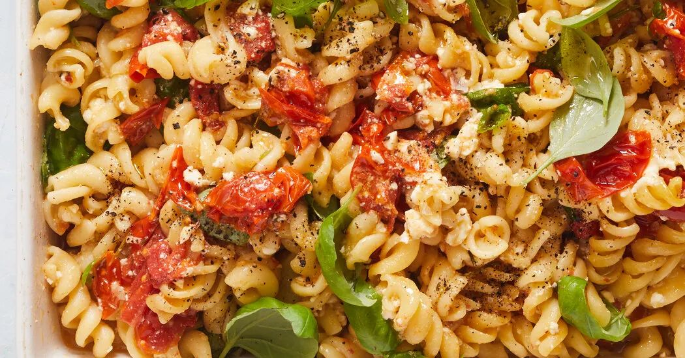

Baked Feta Tomato Pasta

- Meal
- Dinner
- Serves
- 6
- Protein
- vegetarian (feta; add rotisserie chicken if you want)
- Cook
- oven · 15 min active / 50 min total · easy
- Make-ahead / leftovers
- no / yes
- Mediterranean
- yes
- WW tier
- moderate
- Status
- Trying out (probation)
The TikTok baked-feta pasta (Jenni Häyrynen / Liemessa, 2018) the way NYT's Melissa Clark frames it — block of feta in the middle of cherry tomatoes, roast, smash, toss with pasta. Hits cooked-tomato night without meatballs.
Ingredients
- 3 pints cherry tomatoes
- 5 garlic cloves, peeled, left whole
- 1/3 cup olive oil, divided
- 2 blocks feta (6–8 oz each)
- 1/2 tsp black pepper
- Pinch red-pepper flakes (skip or tiny pinch for kids)
- 1 tsp kosher salt, divided
- 1 lb short pasta (bowties, rotini, or penne)
- Handful torn basil, or 1 tsp dried if that's what's in the pantry
- Optional: rotisserie chicken, shredded, stirred in at the end if you need more protein
Method
- Heat oven to 400°F. In a 9×13 dish, toss tomatoes and garlic with most of the olive oil and 1/2 tsp salt. Nestle the feta blocks in the middle. Drizzle remaining oil on the feta. Pepper and a pinch of flakes.
- Roast 35–40 minutes, until tomatoes have burst and the feta is soft and a little browned.
- Meanwhile, boil the pasta in salted water until al dente. Drain, saving 1/2 cup pasta water.
- Smash the feta and tomatoes together in the hot dish until it looks like a creamy sauce. Stir in basil, the pasta, and a splash of pasta water if it's tight. Taste for salt.
- Optional: fold in shredded rotisserie chicken for a meat night.
Notes
- NYT's one-pan version cooks the pasta in the dish with boiling water and foil. Family-of-6 version cooks the pasta separately — that's the original Häyrynen method, and NYT commenters prefer it. Scaled from NYT's 8 oz feta / 2 pints tomatoes / 12 oz pasta (serves 4) to 2 blocks feta / 3 pints / 1 lb pasta.
- Sheep/goat feta in brine melts better than dry cow's-milk crumbles — same note as Sheet-Pan Chickpeas, Feta & Tomatoes. Grocery-store block is fine on probation.
- Not a clone of that sheet-pan: this is pasta as the starch (no rice, no chickpeas). That one is chickpeas + feta over brown rice.
- moderate: two blocks of feta + olive oil, but it's tomato-forward, not a cream casserole.
- Mediterranean ✓: olive oil, vegetarian (or poultry if you add chicken), tomatoes, pasta. 3 of 4.